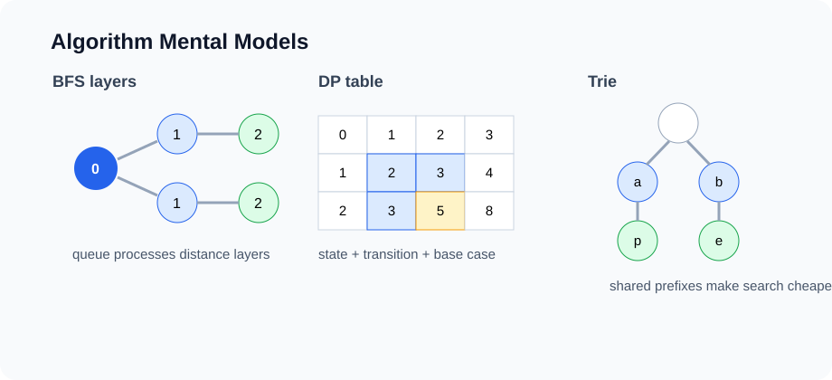

Lesson 12
Graph Algorithms: BFS, DFS, Shortest Paths, and MST
Once a problem is modeled as vertices and edges, graph algorithms answer questions about reachability, distance, dependency order, and minimum-cost connection.

Example first: shortest path in an unweighted maze
A grid can be modeled as a graph: each open cell is a vertex, and adjacent open cells have edges between them. If every move has the same cost, BFS finds the shortest number of moves.
static int shortestPath(int[][] grid) {
int rows = grid.length;
int cols = grid[0].length;
int[][] dirs = {{1, 0}, {-1, 0}, {0, 1}, {0, -1}};
boolean[][] seen = new boolean[rows][cols];
Deque<int[]> queue = new ArrayDeque<>();
queue.addLast(new int[] {0, 0, 0}); // row, col, distance
seen[0][0] = true;
while (!queue.isEmpty()) {
int[] cur = queue.removeFirst();
int r = cur[0];
int c = cur[1];
int d = cur[2];
if (r == rows - 1 && c == cols - 1) return d;
for (int[] dir : dirs) {
int nr = r + dir[0];
int nc = c + dir[1];
if (nr < 0 || nr >= rows || nc < 0 || nc >= cols) continue;
if (grid[nr][nc] == 1 || seen[nr][nc]) continue;
seen[nr][nc] = true;
queue.addLast(new int[] {nr, nc, d + 1});
}
}
return -1;
}BFS explores distance 0, then distance 1, then distance 2. That layer-by-layer order is why it gives shortest paths in unweighted graphs.
Graph algorithm decision table
| Question | Use | Condition |
|---|---|---|
| Can I reach every node in a component? | DFS or BFS | Unweighted reachability |
| Shortest number of edges? | BFS | All edges have equal cost |
| Shortest weighted path? | Dijkstra | Nonnegative edge weights |
| Task ordering with prerequisites? | Topological sort | Directed acyclic graph |
| Cheapest way to connect all nodes? | MST | Connected undirected weighted graph |
BFS template
BFS(start):
create queue
mark start as seen
add start to queue
while queue is not empty:
node = remove first
for next in neighbors(node):
if next is not seen:
mark next as seen
record distance or parent if needed
add next to queue
Use a queue because nodes discovered earlier should be processed earlier. Time is O(V + E) with
an adjacency list.
DFS template
DFS(node):
mark node as seen
for next in neighbors(node):
if next is not seen:
DFS(next)
DFS is useful for connected components, cycle detection, topological sort, and exploring all structure in a
component. Recursive DFS uses O(V) stack space in the worst case.
Connected components with DFS
static int countComponents(List<List<Integer>> graph) {
boolean[] seen = new boolean[graph.size()];
int count = 0;
for (int v = 0; v < graph.size(); v++) {
if (!seen[v]) {
dfs(graph, v, seen);
count++;
}
}
return count;
}
static void dfs(List<List<Integer>> graph, int node, boolean[] seen) {
seen[node] = true;
for (int next : graph.get(node)) {
if (!seen[next]) dfs(graph, next, seen);
}
}Grid graph pattern: number of islands
A grid of land and water is a graph without explicitly building an adjacency list. Neighbors are computed from coordinates.
static int numIslands(char[][] grid) {
int count = 0;
for (int r = 0; r < grid.length; r++) {
for (int c = 0; c < grid[0].length; c++) {
if (grid[r][c] == '1') {
floodFill(grid, r, c);
count++;
}
}
}
return count;
}
static void floodFill(char[][] grid, int r, int c) {
if (r < 0 || r >= grid.length || c < 0 || c >= grid[0].length) return;
if (grid[r][c] != '1') return;
grid[r][c] = '0';
floodFill(grid, r + 1, c);
floodFill(grid, r - 1, c);
floodFill(grid, r, c + 1);
floodFill(grid, r, c - 1);
}
This modifies the input grid. If modification is not allowed, use a separate boolean[][] seen.
Cycle detection in directed graphs
Directed cycle detection needs more than a simple seen set. We track nodes currently on the recursion stack.
static boolean hasDirectedCycle(List<List<Integer>> graph) {
int[] state = new int[graph.size()]; // 0 unvisited, 1 visiting, 2 done
for (int v = 0; v < graph.size(); v++) {
if (state[v] == 0 && dfsCycle(graph, v, state)) return true;
}
return false;
}
static boolean dfsCycle(List<List<Integer>> graph, int node, int[] state) {
state[node] = 1;
for (int next : graph.get(node)) {
if (state[next] == 1) return true;
if (state[next] == 0 && dfsCycle(graph, next, state)) return true;
}
state[node] = 2;
return false;
}Topological sort
A topological order lists vertices so every directed edge goes from earlier to later. It exists only for a directed acyclic graph, or DAG.
static List<Integer> topologicalSort(List<List<Integer>> graph) {
int n = graph.size();
int[] indegree = new int[n];
for (int u = 0; u < n; u++) {
for (int v : graph.get(u)) indegree[v]++;
}
Deque<Integer> queue = new ArrayDeque<>();
for (int i = 0; i < n; i++) {
if (indegree[i] == 0) queue.addLast(i);
}
List<Integer> order = new ArrayList<>();
while (!queue.isEmpty()) {
int u = queue.removeFirst();
order.add(u);
for (int v : graph.get(u)) {
indegree[v]--;
if (indegree[v] == 0) queue.addLast(v);
}
}
return order.size() == n ? order : List.of();
}This is Kahn's algorithm. If not all nodes are output, the graph has a cycle.
Dijkstra's algorithm
Dijkstra finds shortest paths from a source in a graph with nonnegative edge weights. It is BFS with a priority queue ordered by current best distance.
record Edge(int to, int weight) { }
record State(int node, int dist) { }
static int[] dijkstra(List<List<Edge>> graph, int source) {
int n = graph.size();
int[] dist = new int[n];
Arrays.fill(dist, Integer.MAX_VALUE);
dist[source] = 0;
PriorityQueue<State> pq = new PriorityQueue<>(
Comparator.comparingInt(State::dist)
);
pq.add(new State(source, 0));
while (!pq.isEmpty()) {
State cur = pq.remove();
if (cur.dist() != dist[cur.node()]) continue;
for (Edge edge : graph.get(cur.node())) {
int nextDist = cur.dist() + edge.weight();
if (nextDist < dist[edge.to()]) {
dist[edge.to()] = nextDist;
pq.add(new State(edge.to(), nextDist));
}
}
}
return dist;
}
With an adjacency list and priority queue, runtime is typically O((V + E) log V). Dijkstra does
not work correctly with negative edge weights.
Minimum spanning tree
A spanning tree connects all vertices with no cycles. A minimum spanning tree, or MST, has the smallest total edge weight among all spanning trees. MSTs apply to undirected weighted graphs.
Kruskal's algorithm
Sort edges by weight, then add an edge if it connects two different components. Union-Find detects whether the edge would create a cycle.
record WeightedEdge(int u, int v, int weight) { }
static int kruskal(int n, List<WeightedEdge> edges) {
edges.sort(Comparator.comparingInt(WeightedEdge::weight));
DSU dsu = new DSU(n);
int total = 0;
int used = 0;
for (WeightedEdge edge : edges) {
if (dsu.union(edge.u(), edge.v())) {
total += edge.weight();
used++;
if (used == n - 1) break;
}
}
return used == n - 1 ? total : -1;
}
Sorting dominates: O(E log E). Union-Find operations are almost constant amortized time.
Prim's algorithm idea
Prim's algorithm grows one connected tree. It repeatedly chooses the cheapest edge from the current tree to an outside vertex. This uses a priority queue.
PRIM(start):
add start to priority queue with cost 0
while queue is not empty:
remove cheapest candidate
if vertex is already in tree, skip it
add vertex to tree
add outgoing edges to priority queueCommon mistakes
- Using DFS when the problem asks for shortest path in an unweighted graph.
- Using Dijkstra with negative edge weights.
- Forgetting a seen set and looping forever on a cyclic graph.
- Using Union-Find when the actual path is required.
- Forgetting to add both directions in an undirected graph.
- Returning a topological order without checking for cycles.
Analysis routine
ANALYZE-GRAPH-ALGORITHM(problem):
1. Define V and E.
2. Identify graph type: directed, undirected, weighted, unweighted.
3. Identify the question: reachability, shortest path, ordering, MST.
4. Choose BFS, DFS, Dijkstra, topological sort, Kruskal, or Prim.
5. State data structures: queue, stack, priority queue, DSU, seen set.
6. State time and auxiliary space.In-class exercises
- Use BFS to find shortest path length in an unweighted graph.
- Use DFS to count connected components.
- Count islands in a grid.
- Detect a directed cycle with three-color DFS.
- Produce a topological order using indegrees.
- Run Dijkstra on a small weighted graph by hand.
- Run Kruskal's algorithm and show each union step.
Homework: GitHub submission
Create a folder named lesson-12-graph-algorithms in the course homework repository.
lesson-12-graph-algorithms/
README.md
src/
GraphAlgorithms.java
WeightedGraphAlgorithms.java
GridProblems.java
Main.java
analysis/
graph-algorithms-analysis.mdRequired implementation
- BFS shortest path length in an unweighted graph.
- DFS connected components.
- Number of islands in a grid.
- Directed cycle detection.
- Topological sort.
- Dijkstra's algorithm.
- Kruskal's MST using DSU from Lesson 11.
README requirements
- For each method, state what graph type it expects.
- State time and auxiliary space using V and E.
- Explain why BFS gives shortest paths only when edge costs are equal.
- Explain why Dijkstra requires nonnegative weights.
- Include at least two tests for every required method.
Optional challenge
Implement path reconstruction for BFS or Dijkstra by storing a parent array.